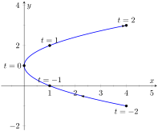
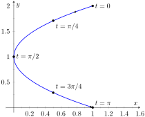
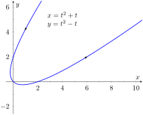
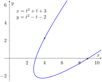
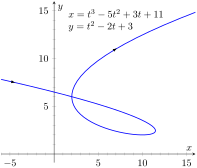
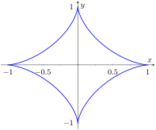
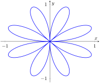
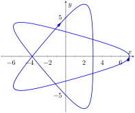
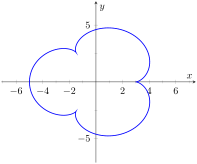
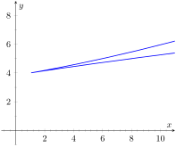

We are familiar with sketching shapes, such as parabolas, by following this basic procedure:
Figure10.2.1.Plotting a graph \(y=f(x)\)
The rectangular equation\(y=f(x)\) works well for some shapes like a parabola with a vertical axis of symmetry, but in the previous section we encountered several shapes that could not be sketched in this manner. (To plot an ellipse using the above procedure, we need to plot the “top” and “bottom” separately.)
In this section we introduce a new sketching procedure:
Figure10.2.2.Plotting a curve \((x(t),y(t))\)
Here, \(x\) and \(y\) are found separately but then plotted together: for each value of the input \(t\text{,}\) we plot the output - the point \((x(t),y(t))\text{.}\)
Subsection10.2.1Plotting parametric curves
The procedure outlined in Figure 10.2.2 leads us to a definition.
Definition10.2.3.Parametric Equations and Curves.
Let \(f\) and \(g\) be continuous functions on an interval \(I\text{.}\) The set of all points \(\big(x,y\big) = \big(f(t),g(t)\big)\) in the Cartesian plane, as \(t\) varies over \(I\text{,}\) is the graph of the parametric equations \(x=f(t)\) and \(y=g(t)\text{,}\) where \(t\) is the parameter. A curve is a graph along with the parametric equations that define it.
This is a formal definition of the word curve. When a curve lies in a plane (such as the Cartesian plane), it is often referred to as a plane curve. Examples will help us understand the concepts introduced in the definition.
Example10.2.4.Plotting parametric functions.
Plot the graph of the parametric equations \(x=t^2\text{,}\)\(y=t+1\) for \(t\) in \([-2,2]\text{.}\)
We plot the graphs of parametric equations in much the same manner as we plotted graphs of functions like \(y=f(x)\text{:}\) we make a table of values, plot points, then connect these points with a “reasonable” looking curve. Figure 10.2.5.(a) shows such a table of values; note how we have 3 columns.
The points \((x,y)\) from the table are plotted in Figure 10.2.5.(b). The points have been connected with a smooth curve. Each point has been labeled with its corresponding \(t\)-value. These values, along with the two arrows along the curve, are used to indicate the orientation of the graph. This information helps us determine the direction in which the graph is “moving.”
\(t\)
\(x\)
\(y\)
\(-2\)
\(4\)
\(-1\)
\(-1\)
\(1\)
\(0\)
\(0\)
\(0\)
\(1\)
\(1\)
\(1\)
\(2\)
\(2\)
\(4\)
\(3\)
(a)
(b)
Figure10.2.5.A table of values of the parametric equations in Example 10.2.4 along with a sketch of their graph
We often use the letter \(t\) as the parameter as we often regard \(t\) as representing time. Certainly there are many contexts in which the parameter is not time, but it can be helpful to think in terms of time as one makes sense of parametric plots and their orientation (for instance, “At time \(t=0\) the position is \((1,2)\) and at time \(t=3\) the position is \((5,1)\text{.}\)”).
Example10.2.6.Plotting parametric functions.
Sketch the graph of the parametric equations \(x=\cos^2(t)\text{,}\)\(y=\cos(t) +1\) for \(t\) in \([0,\pi]\text{.}\)
We again start by making a table of values in Figure 10.2.7.(a), then plot the points \((x,y)\) on the Cartesian plane in Figure 10.2.7.(b).
\(t\)
\(x\)
\(y\)
\(0\)
\(1\)
\(2\)
\(\pi/4\)
\(1/2\)
\(1+\sqrt{2}/2\)
\(\pi/2\)
\(0\)
\(1\)
\(3\pi/4\)
\(1/2\)
\(1-\sqrt{2}/2\)
\(\pi\)
\(1\)
\(0\)
(a)
(b)
Figure10.2.7.A table of values of the parametric equations in Example 10.2.6 along with a sketch of their graph
It is not difficult to show that the curves in Examples 10.2.4 and Example 10.2.6 are portions of the same parabola. While the parabola is the same, the curves are different. In Example 10.2.4, if we let \(t\) vary over all real numbers, we'd obtain the entire parabola. In this example, letting \(t\) vary over all real numbers would still produce the same graph; this portion of the parabola would be traced, and re-traced, infinitely many times. The orientation shown in Figure 10.2.7 shows the orientation on \([0,\pi]\text{,}\) but this orientation is reversed on \([\pi,2\pi]\text{.}\)
These examples begin to illustrate the powerful nature of parametric equations. Their graphs are far more diverse than the graphs of functions produced by “\(y=f(x)\)” functions.
Technology Note: Most graphing utilities can graph functions given in parametric form. Often the word “parametric” is abbreviated as “PAR” or “PARAM” in the options. The user usually needs to determine the graphing window (i.e, the minimum and maximum \(x\)- and \(y\)-values), along with the values of \(t\) that are to be plotted. The user is often prompted to give a \(t\) minimum, a \(t\) maximum, and a “\(t\)-step” or “\(\Delta t\text{.}\)” Graphing utilities effectively plot parametric functions just as we've shown here: they plots lots of points. A smaller \(t\)-step plots more points, making for a smoother graph (but may take longer). In Figure 10.2.5, the \(t\)-step is 1; in Figure 10.2.7, the \(t\)-step is \(\pi/4\text{.}\)
One nice feature of parametric equations is that their graphs are easy to shift. While this is not too difficult in the “\(y=f(x)\)” context, the resulting function can look rather messy. (Plus, to shift to the right by two, we replace \(x\) with \(x-2\text{,}\) which is counter-intuitive.) The following example demonstrates this.
Example10.2.8.Shifting the graph of parametric functions.
Sketch the graph of the parametric equations \(x=t^2+t\text{,}\)\(y=t^2-t\text{.}\) Find new parametric equations that shift this graph to the right 3 places and down 2.
The graph of the parametric equations is given in Figure 10.2.9.(a). It is a parabola with a axis of symmetry along the line \(y=x\text{;}\) the vertex is at \((0,0)\text{.}\)
In order to shift the graph to the right 3 units, we need to increase the \(x\)-value by 3 for every point. The straightforward way to accomplish this is simply to add 3 to the function defining \(x\text{:}\)\(x = t^2+t+3\text{.}\) To shift the graph down by 2 units, we wish to decrease each \(y\)-value by 2, so we subtract 2 from the function defining \(y\text{:}\)\(y = t^2-t-2\text{.}\) Thus our parametric equations for the shifted graph are \(x=t^2+t+3\text{,}\)\(y=t^2-t-2\text{.}\) This is graphed in Figure 10.2.9.(a). Notice how the vertex is now at \((3,-2)\text{.}\)
(a)
(b)
Figure10.2.9.Illustrating how to shift graphs in Example 10.2.8
Because the \(x\)- and \(y\)-values of a graph are determined independently, the graphs of parametric functions often possess features not seen on “\(y=f(x)\)” type graphs. The next example demonstrates how such graphs can arrive at the same point more than once.
Example10.2.10.Graphs that cross themselves.
Plot the parametric functions \(x=t^3-5t^2+3t+11\) and \(y=t^2-2t+3\) and determine the \(t\)-values where the graph crosses itself.
Using the methods developed in this section, we again plot points and graph the parametric equations as shown in Figure 10.2.11. It appears that the graph crosses itself at the point \((2,6)\text{,}\) but we'll need to analytically determine this.

Figure10.2.11.A graph of the parametric equations from Example 10.2.10
We are looking for two different values, say, \(s\) and \(t\text{,}\) where \(x(s) = x(t)\) and \(y(s) = y(t)\text{.}\) That is, the \(x\)-values are the same precisely when the \(y\)-values are the same. This gives us a system of 2 equations with 2 unknowns:
Solving this system is not trivial but involves only algebra. Using the quadratic formula, one can solve for \(t\) in the second equation and find that \(\ds t = 1\pm \sqrt{s^2-2s+1}\text{.}\) This can be substituted into the first equation, revealing that the graph crosses itself at \(t=-1\) and \(t=3\text{.}\) We confirm our result by computing \(x(-1) = x(3)=2\) and \(y(-1) = y(3) = 6\text{.}\)
Subsection10.2.2Converting between rectangular and parametric equations
It is sometimes useful to rewrite equations in rectangular form (i.e., \(y=f(x)\)) into parametric form, and vice-versa. Converting from rectangular to parametric can be very simple: given \(y=f(x)\text{,}\) the parametric equations \(x=t\text{,}\)\(y=f(t)\) produce the same graph. As an example, given \(y=x^2\text{,}\) the parametric equations \(x=t\text{,}\)\(y=t^2\) produce the familiar parabola. However, other parametrizations can be used. The following example demonstrates one possible alternative.
Example10.2.12.Converting from rectangular to parametric.
Consider \(y=x^2\text{.}\) Find parametric equations \(x=f(t)\text{,}\)\(y=g(t)\) for the parabola where \(t=\frac{dy}{dx}\text{.}\) That is, \(t=a\) corresponds to the point on the graph whose tangent line has slope \(a\text{.}\)
We start by computing \(\frac{dy}{dx}\text{:}\)\(y' = 2x\text{.}\) Thus we set \(t=2x\text{.}\) We can solve for \(x\) and find \(x= t/2\text{.}\) Knowing that \(y=x^2\text{,}\) we have \(y= t^2/4\text{.}\) Thus parametric equations for the parabola \(y=x^2\) are
To find the point where the tangent line has a slope of \(-2\text{,}\) we set \(t=-2\text{.}\) This gives the point \((-1, 1)\text{.}\) We can verify that the slope of the line tangent to the curve at this point indeed has a slope of \(-2\text{.}\)
We sometimes choose the parameter to accurately model physical behavior.
Example10.2.13.Converting from rectangular to parametric.
An object is fired from a height of 0 feet and lands 6 seconds later, 192 feet away. Assuming ideal projectile motion, the height, in feet, of the object can be described by \(h(x) = -x^2/64+3x\text{,}\) where \(x\) is the distance in feet from the initial location. (Thus \(h(0) = h(192) = 0\) feet.) Find parametric equations \(x=f(t)\text{,}\)\(y=g(t)\) for the path of the projectile where \(x\) is the horizontal distance the object has traveled at time \(t\) (in seconds) and \(y\) is the height at time \(t\text{.}\)
Physics tells us that the horizontal motion of the projectile is linear; that is, the horizontal speed of the projectile is constant. Since the object travels 192 ft in 6 s, we deduce that the object is moving horizontally at a rate of 32 ft⁄s, giving the equation \(x=32t\text{.}\) As \(y=-x^2/64+3x\text{,}\) we find \(y= -16t^2+96t\text{.}\) We can quickly verify that \(y''=-32\)ft⁄ft2, the acceleration due to gravity, and that the projectile reaches its maximum at \(t=3\text{,}\) halfway along its path.
These parametric equations make certain determinations about the object's location easy: 2 seconds into the flight the object is at the point \(\big(x(2),y(2)\big) = \big(64,128\big)\text{.}\) That is, it has traveled horizontally 64 ft and is at a height of 128 ft, as shown in Figure 10.2.14.
It is sometimes necessary to convert given parametric equations into rectangular form. This can be decidedly more difficult, as some “simple” looking parametric equations can have very “complicated” rectangular equations. This conversion is often referred to as “eliminating the parameter,” as we are looking for a relationship between \(x\) and \(y\) that does not involve the parameter \(t\text{.}\)
Example10.2.15.Eliminating the parameter.
Find a rectangular equation for the curve described by
\begin{equation*}
x= \frac{1}{t^2+1} \text{ and } y=\frac{t^2}{t^2+1}\text{.}
\end{equation*}
There is not a set way to eliminate a parameter. One method is to solve for \(t\) in one equation and then substitute that value in the second. We use that technique here, then show a second, simpler method.
Starting with \(x= 1/(t^2+1)\text{,}\) solve for \(t\text{:}\)\(t = \pm\sqrt{1/x-1}\text{.}\) Substitute this value for \(t\) in the equation for \(y\text{:}\)
Figure10.2.16.Graphing parametric and rectangular equations for a graph in Example 10.2.15
Thus \(y=1-x\text{.}\) One may have recognized this earlier by manipulating the equation for \(y\text{:}\)
\begin{equation*}
y = \frac{t^2}{t^2+1} = 1-\frac{1}{t^2+1} = 1-x\text{.}
\end{equation*}
This is a shortcut that is very specific to this problem; sometimes shortcuts exist and are worth looking for.
We should be careful to limit the domain of the function \(y=1-x\text{.}\) The parametric equations limit \(x\) to values in \((0,1]\text{,}\) thus to produce the same graph we should limit the domain of \(y=1-x\) to the same.
The graphs of these functions is given in Figure 10.2.16. The portion of the graph defined by the parametric equations is given in a thick line; the graph defined by \(y=1-x\) with unrestricted domain is given in a thin line.
Example10.2.17.Eliminating the parameter.
Eliminate the parameter in \(x=4\cos(t) +3\text{,}\)\(y= 2\sin(t) +1\)
We should not try to solve for \(t\) in this situation as the resulting algebra/trig would be messy. Rather, we solve for \(\cos(t)\) and \(\sin(t)\) in each equation, respectively. This gives
\begin{equation*}
\cos(t) = \frac{x-3}{4} \text{ and } \sin(t) =\frac{y-1}{2}\text{.}
\end{equation*}
The Pythagorean Theorem gives \(\cos^2(t) +\sin^2(t) =1\text{,}\) so:
Figure10.2.18.Graphing the parametric equations \(x=4\cos(t) +3\text{,}\)\(y=2\sin(t) +1\) in Example 10.2.17
This final equation should look familiar — it is the equation of an ellipse! Figure 10.2.18 plots the parametric equations, demonstrating that the graph is indeed of an ellipse with a horizontal major axis and center at \((3,1)\text{.}\)
The Pythagorean Theorem can also be used to identify parametric equations for hyperbolas. We give the parametric equations for ellipses and hyperbolas in the following Key Idea.
Key Idea10.2.19.Parametric Equations of Ellipses and Hyperbolas.
define a hyperbola with vertical transverse axis centered at \((h,k)\text{,}\) and
\begin{equation*}
x=\pm a\sec(t) +h, y=b\tan(t) + k
\end{equation*}
defines a hyperbola with horizontal transverse axis. Each has asymptotes at \(y=\pm b/a(x-h)+k\text{.}\)
Subsection10.2.3Special Curves
Figure 10.2.20 gives a small gallery of “interesting” and “famous” curves along with parametric equations that produce them. Interested readers can begin learning more about these curves through internet searches.
One might note a feature shared by two of these graphs: “sharp corners,” or cusps. We have seen graphs with cusps before and determined that such functions are not differentiable at these points. This leads us to a definition.
(a)Astroid where \(x=\cos^3(t)\) and \(y=\sin^3(t)\)
(b)Rose Curve where \(x=\cos(t)\sin(4t)\) and \(y=\sin(t)\sin(4t)\)
(c)Hypotrochoid where \(x=2\cos(t)+5\cos(2t/3)\) and \(y=2\sin(t)-5\sin(2t/3)\)
(d)Epicycloid where \(x=4\cos(t)-\cos(4t)\) and \(y=4\sin(t)-\sin(4t)\)
Figure10.2.20.A gallery of interesting planar curves
Definition10.2.21.Smooth.
A curve \(C\) defined by \(x=f(t)\text{,}\)\(y=g(t)\) is smooth on an interval \(I\) if \(\fp\) and \(g'\) are continuous on \(I\) and not simultaneously 0 (except possibly at the endpoints of \(I\)). A curve is piecewise smooth on \(I\) if \(I\) can be partitioned into subintervals where \(C\) is smooth on each subinterval.
Consider the astroid, given by \(x=\cos^3(t)\text{,}\)\(y=\sin^3(t)\text{.}\) Taking derivatives, we have:
It is clear that each is 0 when \(t=0,\, \pi/2,\, \pi,\ldots\text{.}\) Thus the astroid is not smooth at these points, corresponding to the cusps seen in the figure.
We demonstrate this once more.
Example10.2.22.Determine where a curve is not smooth.
Let a curve \(C\) be defined by the parametric equations \(x=t^3-12t+17\) and \(y=t^2-4t+8\text{.}\) Determine the points, if any, where it is not smooth.
We see at \(t=2\) both \(x'\) and \(y'\) are 0; thus \(C\) is not smooth at \(t=2\text{,}\) corresponding to the point \((1,4)\text{.}\) The curve is graphed in Figure 10.2.23, illustrating the cusp at \((1,4)\text{.}\)

Figure10.2.23.Graphing the curve in Example 10.2.22; note it is not smooth at \((1,4)\)
If a curve is not smooth at \(t=t_0\text{,}\) it means that \(x'(t_0)=y'(t_0)=0\) as defined. This, in turn, means that rate of change of \(x\) (and \(y\)) is 0; that is, at that instant, neither \(x\) nor \(y\) is changing. If the parametric equations describe the path of some object, this means the object is at rest at \(t_0\text{.}\) An object at rest can make a “sharp” change in direction, whereas moving objects tend to change direction in a “smooth” fashion.
One should be careful to note that a “sharp corner” does not have to occur when a curve is not smooth. For instance, one can verify that \(x=t^3\text{,}\)\(y=t^6\) produce the familiar \(y=x^2\) parabola. However, in this parametrization, the curve is not smooth. A particle traveling along the parabola according to the given parametric equations comes to rest at \(t=0\text{,}\) though no sharp point is created.
Our previous experience with cusps taught us that a function was not differentiable at a cusp. This can lead us to wonder about derivatives in the context of parametric equations and the application of other calculus concepts. Given a curve defined parametrically, how do we find the slopes of tangent lines? Can we determine concavity? We explore these concepts and more in the next section.
Exercises10.2.4Exercises
Terms and Concepts
1.
True or False? When sketching the graph of parametric equations, the \(x\)- and \(y\)-values are found separately, then plotted together.
True
False
2.
The direction in which a graph is “moving” is called the of the graph.
3.
An equation written as \(y=f(x)\) is written in form.
4.
Create parametric equations \(x=f(t)\text{,}\)\(y=g(t)\) and sketch their graph. Explain any interesting features of your graph based on the functions \(f\) and \(g\text{.}\)
Problems
Exercise Group.
In the following exercises, sketch the graph of the given parametric equations by hand, making a table of points to plot. Be sure to indicate the orientation of the graph.
In the following exercises, sketch the graph of the given parametric equations; using a graphing utility is advisable. Be sure to indicate the orientation of the graph.
9.
\(x=t^3-2t^2\text{,}\)\(y=t^2\text{,}\)\(-2\leq t \leq 3\)
10.
\(x=1/t\text{,}\)\(y=\sin(t)\text{,}\)\(0\lt t \leq 10\)
11.
\(x=3\cos(t)\text{,}\)\(y=5\sin(t)\text{,}\)\(0\leq t \leq 2\pi\)
12.
\(x=3\cos(t) +2\text{,}\)\(y=5\sin(t) +3\text{,}\)\(0\leq t \leq 2\pi\)
13.
\(x=\cos(t)\text{,}\)\(y=\cos(2t)\text{,}\)\(0\leq t \leq \pi\)
14.
\(x=\cos(t)\text{,}\)\(y=\sin(2t)\text{,}\)\(0\leq t \leq 2\pi\)
15.
\(x=2\sec(t)\text{,}\)\(y=3\tan(t)\text{,}\)\(-\pi/2\lt t \lt \pi/2\)
16.
\(x=\cosh(t)\text{,}\)\(y=\sinh(t)\text{,}\)\(-2\leq t \leq 2\)
17.
\(x=\cos(t) +\frac14\cos(8t)\text{,}\)\(y=\sin(t) +\frac14\sin(8t)\text{,}\)\(0\leq t \leq 2\pi\)
18.
\(x=\cos(t) +\frac14\sin(8t)\text{,}\)\(y=\sin(t) +\frac14\cos(8t)\text{,}\)\(0\leq t \leq 2\pi\)
Exercise Group.
In the following exercises, four sets of parametric equations are given. Describe how their graphs are similar and different. Be sure to discuss orientation and ranges.
Eliminate the parameter in the given parametric equations.
21.
\(x=2t+5\text{,}\)\(y=-3t+1\)
22.
\(x=\sec(t)\text{,}\)\(y=\tan(t)\)
23.
\(x=4\sin(t) +1\text{,}\)\(y=3\cos(t) -2\)
24.
\(x=t^2\text{,}\)\(y=t^3\)
25.
\(x=\frac{1}{t+1}\text{,}\)\(y=\frac{3t+5}{t+1}\)
26.
\(\ds x=e^t\text{,}\)\(\ds y=e^{3t}-3\)
27.
\(\ds x=\ln(t)\text{,}\)\(\ds y=t^2-1\)
28.
\(\ds x=\cot(t)\text{,}\)\(\ds y=\csc(t)\)
29.
\(\ds x=\cosh(t)\text{,}\)\(\ds y=\sinh(t)\)
30.
\(x=\cos(2t)\text{,}\)\(y=\sin(t)\)
Exercise Group.
In the following exercises, eliminate the parameter in the given parametric equations. Describe the curve defined by the parametric equations based on its rectangular form.
In the following exercises, find parametric equations for the given rectangular equation using the parameter \(\ds t=\frac{dy}{dx}\text{.}\) Verify that at \(t=1\text{,}\) the point on the graph has a tangent line with slope of 1.
35.
\(y=3x^2-11x+2\)
36.
\(y=e^x\)
37.
\(y=\sin(x)\)
38.
\(y=\sqrt{x}\) on \([0,\infty)\)
Exercise Group.
In the following exercises, find the values of \(t\) where the graph of the parametric equations crosses itself.
39.
\(x=t^3-t+3\text{,}\)\(y=t^2-3\)
40.
\(x=t^3-4t^2+t+7\text{,}\)\(y=t^2-t\)
41.
\(x=\cos(t)\text{,}\)\(y=\sin(2t)\) on \([0,2\pi]\)
42.
\(x=\cos(t) \cos(3t)\text{,}\)\(y=\sin(t) \cos(3t)\) on \([0,\pi]\)
Exercise Group.
In the following exercises, find the value(s) of \(t\) where the curve defined by the parametric equations is not smooth.
Find parametric equations that describe the given situation.
47.
A projectile is fired from a height of 0 ft, landing 16 ft away in 4 s.
48.
A projectile is fired from a height of 0 ft, landing 200 ft away in 4 s.
49.
A projectile is fired from a height of 0 ft, landing 200 ft away in 20 s.
50.
Find parametric equations that describe a circle of radius \(2\text{,}\) centered at the origin, that is traced clockwise once at constant speed on \([0,2\pi]\text{.}\)
\(x=\)
\(y=\)
51.
Find parametric equations that describe a circle of radius \(3\text{,}\) centered at \((1,1)\text{,}\) that is traced once counter-clockwise at constant speed on \([0,1]\text{.}\)
\(x=\)
\(y=\)
52.
Find parametric equations that describe an ellipse centered at \((1,3)\text{,}\) with vertical major axis of length \(6\) and minor axis of length \(2\text{.}\)
\(x=\)
\(y=\)
53.
An ellipse with foci at \((\pm 1,0)\) and vertices at \((\pm 5,0)\text{.}\)
54.
A hyperbola with foci at \((5,-3)\) and \((-1,-3)\text{,}\) and with vertices at \((1,-3)\) and \((3,-3)\text{.}\)
55.
A hyperbola with vertices at \((0,\pm 6)\) and asymptotes \(y=\pm 3x\text{.}\)